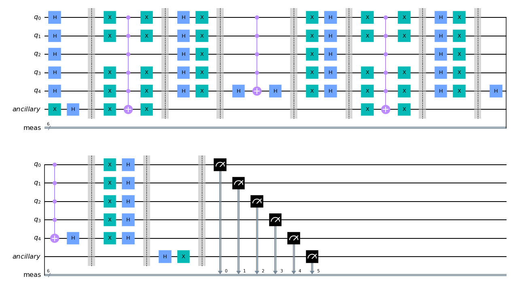
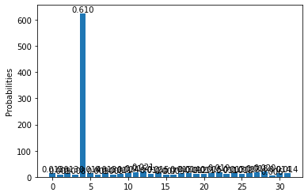
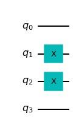
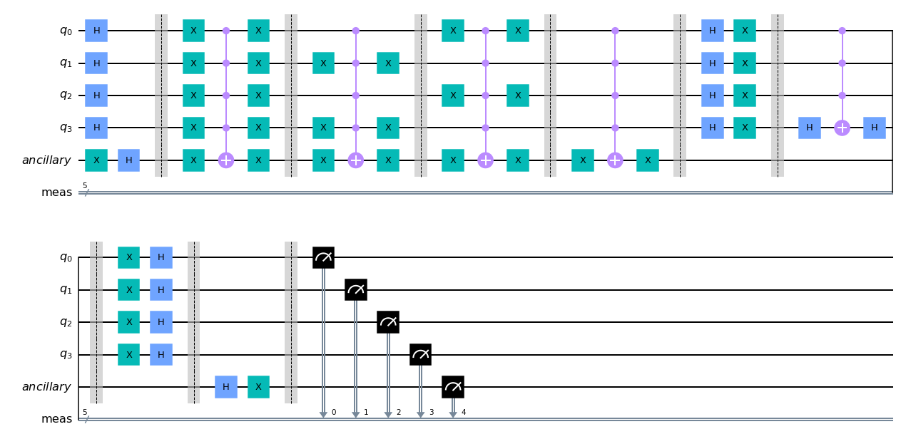
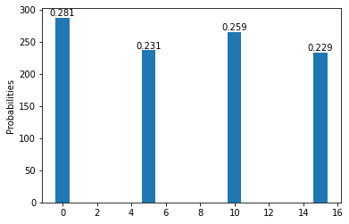
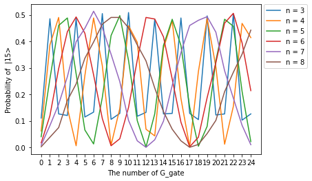
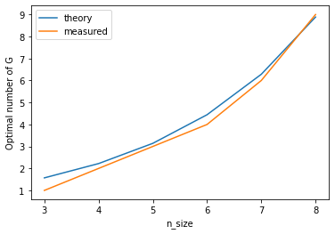

Grover’s altorithm
Contents
4.5. Grover’s altorithm¶
import numpy as np
import matplotlib.pyplot as plt
%matplotlib inline
import warnings
warnings.filterwarnings("ignore")
from qiskit import IBMQ, Aer
from qiskit.providers.ibmq import least_busy
from qiskit import QuantumCircuit, ClassicalRegister, QuantumRegister, execute
from qiskit.visualization import plot_histogram
def initialize(circuit):
n = circuit.num_qubits
for qubit in range(n-1):
circuit.h(qubit)
circuit.x(n-1)
circuit.h(n-1)
circuit.barrier()
def oracle(circuit, targets):
'''
circuit : Quantum circuit
target : list of integers
'''
if isinstance(targets, int):
targets = (targets,)
else:
pass
n = circuit.num_qubits
for target in targets:
for i in range(n):
if not((target >> i)) & 1 == 1:
circuit.x(i)
circuit.mct(list(range(n-1)), n-1)
for i in range(n):
if not((target >> i)) & 1 == 1:
circuit.x(i)
circuit.barrier()
def diffuser(circuit):
n = circuit.num_qubits - 1
circuit.h(list(range(n)))
circuit.x(list(range(n)))
circuit.barrier()
circuit.h(n-1)
circuit.mct(list(range(n-1)), n-1)
circuit.h(n-1)
circuit.barrier()
circuit.x(list(range(n)))
circuit.h(list(range(n)))
circuit.barrier()
def grover(n, target, repeat, shots = 1024):
qr = QuantumRegister(n, 'q')
anc = QuantumRegister(1, 'ancillary')
circuit = QuantumCircuit(qr, anc)
initialize(circuit)
for _ in range(repeat):
oracle(circuit, target)
diffuser(circuit)
# Clear the ancilla bit
circuit.h(n)
circuit.x(n)
circuit.measure_all()
backend = Aer.get_backend('qasm_simulator')
results = execute(circuit, backend=backend, shots=shots).result()
answer = results.get_counts()
return circuit, answer
def show_distribution(answer):
n = len(answer)
x = [int(key,2) for key in list(answer.keys())]# int(key,2)はstringの2進数をintに直している
y = list(answer.values())
fig, ax = plt.subplots()
rect = ax.bar(x,y)
def autolabel(rects):
for rect in rects:
height = rect.get_height()
ax.annotate('{:.3f}'.format(height/sum(y)),
xy=(rect.get_x()+rect.get_width()/2, height),xytext=(0,0),
textcoords="offset points",ha='center', va='bottom')
autolabel(rect)
plt.ylabel('Probabilities')
plt.show()
4.6. test¶
n = 5
target = 4
repeat = 2
circuit, answer = grover(n, target, repeat)
4
circuit.draw(output='mpl')

show_distribution(answer)

4.7. Homework¶
4.7.1. Question 1¶
Implement 4 qubit Grover search using Qiskit
Map binary variables \(\{x_1, x_2, x_3, x_4\}\) to qubits \(\{q_1, q_2, q_3, q_4\}\)
“good” answers are answers satisfying \(\{x_1 = x_3 \cap x_2 = x_4\}\)
Ans.¶
# Map binary variables to qubits
target = '0110'
target = [int(x) for x in target]
circuit = QuantumCircuit(n)
for i,x in enumerate(target):
if x == 1:
circuit.x(i)
circuit.draw(output='mpl')

# find good indices
n = 4
good_index_list = []
for i in range(2**n):
binary = bin(i).replace('0b','')
while len(binary) < n:
binary = '0' + binary
if binary[0] == binary[2] and binary[1] == binary[3]:
good_index_list.append('0b' + binary)
else:
pass
target = [int(x, 2) for x in good_index_list]
print(good_index_list)
print(target)
['0b0000', '0b0101', '0b1010', '0b1111']
[0, 5, 10, 15]
repeat = 1
circuit, answer = grover(n, target, repeat)
circuit.draw(output='mpl')

show_distribution(answer)

4.7.2. Question 2¶
How many times do you need to apply Grover operators to get “good” answers with probability 1 for the following situation?
- Q2-1: A list with size N and the number of “good” answers is N/4.
- Q2-2: A list with size N and the number of “good” answers is N/2.
- hint: Utilize the answer of Q2-1 and expand your imagination.
Ans.¶
When there is one good answer,
After k iterations, the state will be
Thus, we have to apply the gate untill \((2k+1)\theta \sim \pi/2\). ,Since \(\sin\theta = \frac1{\sqrt{N}} \sim \theta\), \(k \sim \frac{\pi}{4}\sqrt{N}\).
When there are several good answers, $\( \begin{aligned} \ket{s}&=\sqrt{\frac{N-M}{N}}\ket{w^{\perp}}+\sqrt{\frac{M}{N}}\ket{w}\\ &=: \cos\theta\ket{w^{\perp}}+\sin\theta\ket{w}\\ \end{aligned} \)$
Like above, we have to apply the gate untill \((2k+1)\theta \sim \pi/2\). ,Since \(\sin\theta = \sqrt{\frac{M}{N}} \sim \theta\), \(k \sim \frac{\pi}{4}\sqrt{\frac{N}{M}}\).
Especially when \( M = N/4 \), \(\sin\theta = 1/2 \rightarrow \theta = \pi/6\). Substituting \(\theta\) into \((2k+1)\theta \sim \pi/2\), we get \(k = 1\).
Especially when \( M = N/2 \), \(\sin\theta = 1/\sqrt{2} \rightarrow \ket{s} =\frac{1}{\sqrt{2}}\ket{w^{\perp}}+\frac{1}{\sqrt{2}}\ket{w}\). If we apply grover gate to this state once, it becomes \(\ket{s} =\frac{1}{\sqrt{2}}\ket{w^{\perp}}-\frac{1}{\sqrt{2}}\ket{w}\). Once more again, we get \(\ket{s} =\frac{1}{\sqrt{2}}\ket{w^{\perp}}+\frac{1}{\sqrt{2}}\ket{w}\). This is the same state as initial state.
From these things, we can see that it is meaningless to use Grover’s algorithm when \( M = N/2\) .
simulate how many times we need to apply Grover gate to maximize the probability of good indices.¶
targets = (4, 15)
n = np.arange(3, 9) # list of the number of qubits
repeat_max = 25 # maximum repetition
shots = 1024
Optimal_number = []
x = np.arange(repeat_max)
ys = []
for i in n:
y = []
for repeat in range(repeat_max):
circuit, answer = grover(i, targets, repeat)
str_targets = []
for target in targets:
str_target = bin(target).replace('0b','')
while len(str_target) < i+1:
str_target = '0' + str_target
str_targets.append(str_target)
y.append(answer.get(str_targets[0],0) /shots)
ys.append(y)
a = 0
for j in range(len(y)):
if j == len(y)-1:
a = j
break
elif y[j+1]< y[j]:
a = j
break
else:
pass
Optimal_number.append(a)
for i in range(len(n)):
plt.plot(x, ys[i], label = f'n = {n[i]}')
plt.xticks(np.arange(repeat_max))
plt.xlabel('The number of G_gate')
plt.ylabel(f'Probability of |{target}>')
plt.legend(bbox_to_anchor=(1.01, 1), loc='upper left', borderaxespad=0, fontsize=10)
plt.title('')
plt.show()
y_ = []
for i in n:
a = np.pi/4*np.sqrt(2)**(i-1)
y_.append(a)
plt.plot(n, y_, label = 'theory')
plt.plot(n, Optimal_number, label = 'measured')
plt.xlabel('n_size')
plt.ylabel('Optimal number of G')
plt.legend()
plt.show()


Theoretically, the optimal number of repetition is \(k \sim \frac{\pi}{4}\sqrt{N/2} \propto (\sqrt{2})^{n-1}(N = 2^n)\)(increase exponentially)